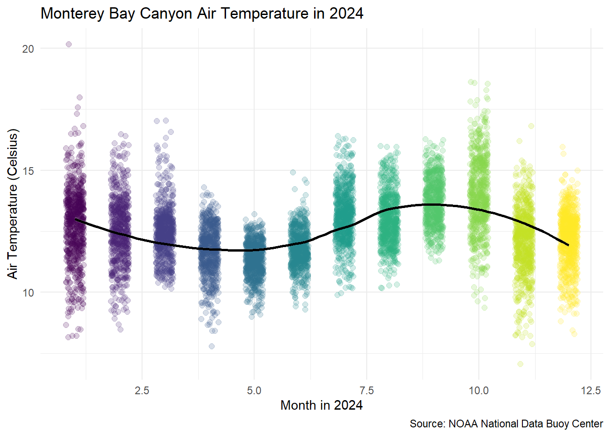

Set up your GitHub workflow (either using the method of creating a repository and using Version Control to set up your project or vice versa using the usethis package commands we have learned).
Use appropriate naming conventions for your project (see Code Style Guide), e.g. lab-4-import-data.
Your project folder should contain the following:
.Rproj
lab-4-student.qmd
“data-raw” folder
buoy_2024.txt
“data-clean” folder that contains final data set
rendered document
rendered document (.md)
Seeking Help
Part of learning to program is learning from a variety of resources. Thus, I expect you will use resources that you find on the internet. There is, however, an important balance between copying someone else’s code and using their code to learn. Therefore, if you use external resources, I want to know about it.
If you used Google, you are expected to “inform” me of any resources you used by pasting the link to the resource in a code comment next to where you used that resource.
If you used ChatGPT, you are expected to “inform” me of the assistance you received by (1) indicating somewhere in the problem that you used ChatGPT (e.g., below the question prompt or as a code comment), and (2) downloading and including the .txt file containing your entire conversation with ChatGPT in your repository. ChatGPT can we used as a “search engine”, but you should not copy and paste prompts from the lab or the code into your lab.
Additionally, you are permitted and encouraged to work with your peers as you complete lab assignments, but you are expected to do your own work. Copying from each other is cheating, and letting people copy from you is also cheating. Please don’t do either of those things.
Lab Instructions
The questions in this lab are noted with numbers and boldface. Each question will require you to produce code, whether it is one line or multiple lines.
This document is quite plain, meaning it does not have any special formatting. As part of your demonstration of creating professional looking Quarto documents, I would encourage you to spice your documents up (e.g., declaring execution options, specifying how your figures should be output, formatting your code output, etc.).
Setup
In the code chunk below, load in the packages necessary for your analysis. You should only need the tidyverse package for this analysis.
library(tidyverse)
── Attaching core tidyverse packages ──────────────────────── tidyverse 2.0.0 ──
✔ dplyr 1.1.4 ✔ readr 2.1.5
✔ forcats 1.0.0 ✔ stringr 1.5.1
✔ ggplot2 3.5.1 ✔ tibble 3.2.1
✔ lubridate 1.9.3 ✔ tidyr 1.3.1
✔ purrr 1.0.2
── Conflicts ────────────────────────────────────────── tidyverse_conflicts() ──
✖ dplyr::filter() masks stats::filter()
✖ dplyr::lag() masks stats::lag()
ℹ Use the conflicted package (<http://conflicted.r-lib.org/>) to force all conflicts to become errors
Part 2: Data Context
Throughout the Monterey Bay there are various NOAA stations that capture data on wind speed, wave height, air temperature and many other data points. Data such as this can be used to predict weather or tidal event or used in conjunction with other data, such as population estimates of sardines or whale migration, to understand the ocean ecosystem.
For this lab, we will focus on Station 46092, which is maintained by MBARI (Monterey Bay Aquarium Research Institute). which is on the outer edge of the Monterey Bay Canyon. Data is collected and stored hourly, but sometimes there are issues with censors not working or other events that lead to missing data.
We will be looking at a historical file from 2024 to examine air temperature trends over the last year. Historical files have gone through post-processing analysis and represent the data sent to the archive centers. The formats for both are generally the same, with the major difference being the treatment of missing data. Missing data in the Historical files are variable number of 9’s, depending on the data type (for example: 999.0 99.0).
In addition, the data file also stores a “comment” in the second row that contains the units measured for each variable. Read more about the variables stored in the historical files here
Finally, notice that the data storage type is txt which means we cannot use read_csv() to import the data. Instead
Step 1: Reading the Data into R
Read the data into R. Since it is a txt file it is considered a “whitespace-separated file”. Use the (readr)[https://readr.tidyverse.org/index.html] website to determine the appropriate read_XXX() function.
When you read in the data give it an appropriate name for what the data represents. The read in file should look like this (note this is just the first seven columns):
Notice that the data is all read in as a character value and the first row contains information that is not data, but additional information about the variables: this is called a “comment” in the data.
Step 2: Specify the Comment Row
In your data, you will notice the # in front of yr in the second row. That is the symbol that indicates a comment in the data set. Using the cheatsheet or the (readr)[https://readr.tidyverse.org/index.html] website, add an argument to your function that indicates that the comment row begins with #. Your data should now look like this:
We want to use snake_case for our variable names. Use the janitor package to clean the variable names. Notice, that because month was originally coded MM and minute was originally coded mm that now month is mm and minute is mm_2 to create a distinction between them.
library(janitor)
Attaching package: 'janitor'
The following objects are masked from 'package:stats':
chisq.test, fisher.test
buoy_data_clean <- buoy_data %>%clean_names()
Step 4: Write the Data Part 1
We will have a bit of cleaning to do on the data, but we have an issue. The 99 and 999’s in the data are numeric and not character values. In order for us to specify them as NAs we need to do a little work around.
Write the data to a csv file called buoy_update.csv. Be sure to write it to your data-raw folder.
Now we will read the data back in, be sure to assign the it a meaningful object name, BUT we are going to do two things:
Specify all column type defaults as character.
Specify NAs as “99” and “999”
Remember that now we are reading back in a data file of type csv. Now when you look at the data we should have NA instead of 99 or 999 in our data, for example:
This is great! But we created another problem. Now all of our numeric values are being treated like characters and we don’t want that. There are a couple of ways to fix this. We can write and reread in the data setting the column types to double or we can use the readr parsing functions.
Here is the code you can use to fix the data without exporting and importing again (we will learn more about the mutate() function. Insert whatever you called your buoy data on the last import for your_file_name.
Now we have our clean, correctly classified, data ready for analysis as buoy_final. Go ahead and write that data as a csv file into your data-clean file. Once you’ve done that. Set the data cleaning code chunks to eval: false so that you do not rerun them again when you render the document.
Part 3: Recreate the Following Visualization
Now that are data is “analytic ready”, go ahead and read in your clean data and use it to try and recreate the following visualization. Do your best to match the following visualization as close as possible. (Hint: when specifying color, you may need to use factor() to get R to treat a continuous value as discrete).
write_csv(buoy_final, "data-clean/buoy_final.csv")ggplot(buoy_final, aes(x = mm, y = atmp, color =as.factor(mm))) +geom_jitter(alpha =0.2, width =0.20, size =2) +geom_smooth(aes(group =1), color ="black", size =1, method ="loess") +scale_color_viridis_d(option ="viridis") +labs(title ="Monterey Bay Canyon Air Temperature in 2024",x ="Month in 2024",y ="Air Temperature (Celsius)",caption ="Source: NOAA National Data Buoy Center", ) +theme_minimal() +theme(legend.position ="none" )
Warning: Using `size` aesthetic for lines was deprecated in ggplot2 3.4.0.
ℹ Please use `linewidth` instead.
`geom_smooth()` using formula = 'y ~ x'

Part 4: Find a Data Set
For your final portfolio, you will choose a data set to clean and provide an analysis of through visualization (or more if you have the experience). For this week, choose a data set
It is a real-world application of R that has not exactly been worked out before (e.g. it isn’t a demo from some package or blog).
It is interesting to you.
It involves data and analyzing or presenting that data. The data may be data you have from a lab, or something you have retrieved from the web, some examples of good sources: FBI database on crime statistics, National Oceanic and Atmospheric Administration, World Health Organization, Twitter, Yahoo finance data, etc. If you are having problems finding a dataset, see the resources at the end of the project description.
The analysis and presentation is useful in the real-world.
One fun source for data is Tidy Tuesday which posts a new data set almost every week. It is a great place to find ideas and sources.
For your found data write a brief description of the data and and provide its source.
Insert your description and link to your source here. Identify 2-3 research questions you could try to answer with this data.
Lab 4 Submission
For Lab 4 you will submit the link to your GitHub repository. Your rendered file is required to have the following specifications in the YAML options (at the top of your document):
have the plots embedded (embed-resources: true)
include your source code (code-tools: true)
include all your code and output (echo: true)
If any of the options are not included, your Lab 3 or Challenge 3 assignment will receive an “Incomplete” and you will be required to submit a revision.
In addition, your document should not have any warnings or messages output in your HTML document. If your HTML contains warnings or messages, you will receive an “Incomplete” for document formatting and you will be required to submit a revision.